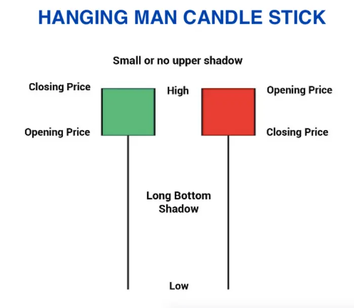
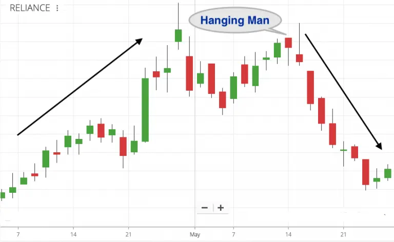
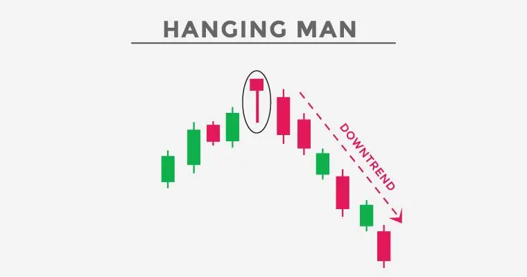

Hanging man is a bearish reversal candlestick pattern that has a long lower shadow and a small real body.
This candlestick pattern appears at the end of the uptrend indicating weakness in further price movement.
It is formed when the bulls have pushed the prices up and now they are not able to push further.
This candlestick chart pattern has a small real body which means that the distance between the opening and closing price is very less.
There is no upper shadow and the lower shadow is twice the length of its body.
This pattern provides an opportunity for traders for squaring their buy position and enter a short position.
| Formation of this Pattern |
Here is the formation of the Hanging Man Candlestick Pattern:

| Psychology of Hanging Man Candle |
As you read the next two paragraphs, try to visualize why the Hanging Man candle gets formed.
The stock has been on an uptrend for the last 3 months. The price has risen steadily. One day, you see the price falling heavily (due to selling pressure). But the price recovers to end slightly above or below the opening.
In other words, the bears (sellers) tried to take control and bring the price down. But the bulls (buyers) resisted the fall and took the price back up. That’s how the ‘Hanging Man’ candle gets formed.
The ‘Hanging Man’ can be one of the first signs of weakness during an upward trend. It could happen because of ‘profit booking’ or ‘expensive valuations’. But in purely technical terms, it’s a sign of weakness for the stock.
If the exact same candle gets formed during a downtrend, it’s called a ‘Hammer’ and it could potentially reverse the downtrend and take the stock upwards.
| Examples of Hanging Man on Charts |

In the chart above, Reliance Industries was in an uptrend. The stock had risen significantly over a short period of time. There was weakness in between, but the ‘Hanging Man’ candle resulted in a sharp downfall.
The short-term trend reversal for Reliance was confirmed when the candle next to the ‘Hanging Man’ was also bearish.
| Hanging Man for Long-Term Investors |
If a stock has risen way too much in a short period of time, investors can look for ‘Hanging Man’ candles to book full or partial profits.
Candles like ‘Hanging Man’ can be used in combination with Fundamental Analysis. If the price-to-earning ratio (P.E) is too high and the stock is showing bearish signs on the chart, profits can be booked.
However, selling your winning stocks after a single bearish candle isn’t the right approach.
Long term investors can only make large gains by holding on to winners for a long period of time – until the trend reversal is confirmed on weekly or monthly charts. Daily charts and lower (60 min time frame etc) are for short to medium term traders only.
Good stocks in an uptrend should not be sold due to short-term weakness on the charts.
